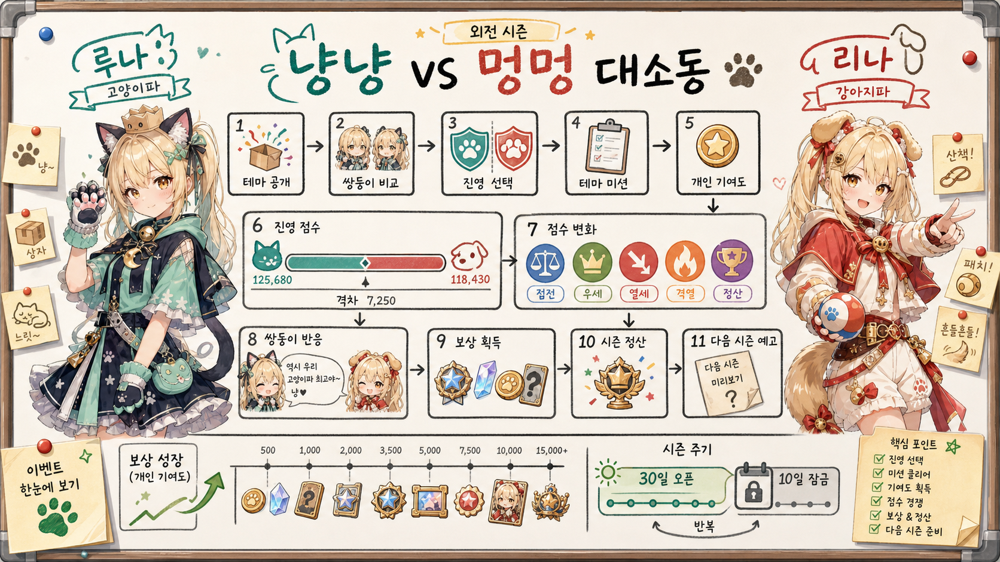
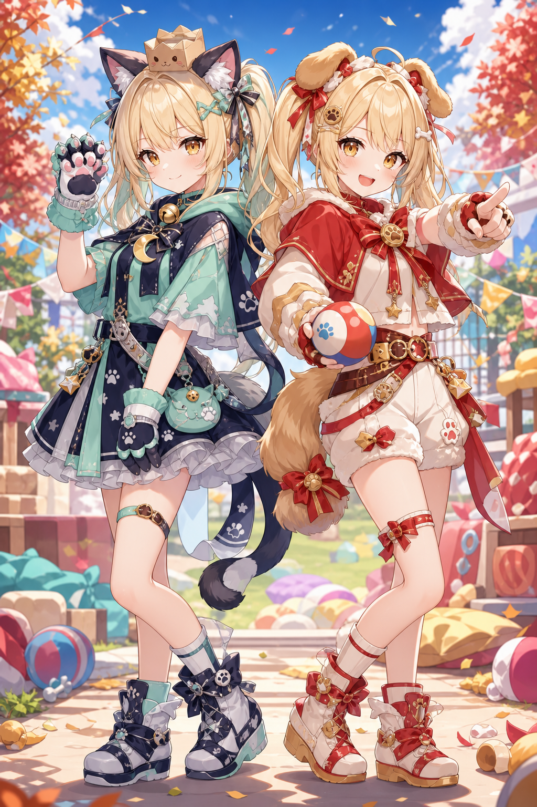

쌍둥이 NPC 리나와 루나가 시즌마다 하나의 외전 주제를 두고 장난스럽게 겨루는 진영 이벤트.

위 이미지는 기획 검토용 요약 이미지이며, 최종 게임 리소스나 실제 UI 화면이 아니다.
섹션 1
1. 기획의도
쌍둥이 NPC 리나와 루나가 매 시즌 다른 주제로 벌이는 가벼운 테마 배틀이다.
사용자 확정 기준
쌍둥이 NPC 리나와 루나가 유저들을 걸고 장난스럽게 경쟁하는 외전 시즌 콘텐츠다.
시즌마다 주제가 달라지고, 이번 시즌 주제는 고양이 vs 개다.
모든 유저는 고양이파 또는 강아지파 중 하나를 선택한다.
기존 게임 플레이와 시즌 미션을 수행해 자기 진영의 점수를 올린다.
30일 오픈, 10일 정산 잠금 구조를 기본으로 한다.
이 시즌은 본편의 갈등을 키우는 메인 서사가 아니라, 리나와 루나가 매 시즌 다른 주제로 벌이는 가벼운 테마 배틀이다.
유저는 강아지파와 고양이파 중 하나를 고르고, 평소 하던 플레이를 시즌 점수와 보상 회수로 연결한다.
목표는 승패 하나로 유저를 갈라놓는 것이 아니라, 30일 동안 선택한 진영의 취향, 대사, 보상, 외전 수집품이 계정에 남게 하는 것이다.

기획의도 도식: 시즌 주제 공개에서 다음 시즌 예고까지
flowchart LR
A["시즌 주제 공개 고양이 vs 개"] --> B["리나/루나 해석 비교"]
B --> C["진영 선택 강아지파 / 고양이파"]
C --> D["테마 미션 수행"]
D --> E["개인 기여도 획득"]
E --> F["진영 점수 반영"]
F --> G["점수 상태 변화 박빙 / 우세 / 열세 / 과열"]
G --> H["쌍둥이 반응 대사"]
H --> I["보상 회수"]
I --> D
G --> J["시즌 정산"]
J --> K["앨범 / 칭호 / 다음 시즌 예고"]
1시즌 주제 공개고양이 vs 개 테마와 코스튬 실루엣 공개.
2리나/루나 해석 비교리나는 강아지파, 루나는 고양이파의 매력을 제시.
3진영 선택강아지파 또는 고양이파를 선택.
4테마 미션 수행선택한 편의 행동 감각을 미션으로 반복.
5진영 점수 반영박빙, 우세, 열세, 과열 상태가 갱신.
6보상 회수와 재진입대사와 보상을 받고 다시 미션으로 순환.
섹션 2
2. 핵심 경험
이번 시즌 나는 어느 취향의 편에 섰는가를 고르고, 그 선택이 점수판과 보상에 계속 반영되는 경험이다.
핵심 경험은 이번 시즌 나는 어느 취향의 편에 섰는가를 고르고, 기존 플레이를 하면서 그 선택이 점수판, 쌍둥이 대사, 보상, 앨범에 계속 반영되는 것이다.
강아지파는 애교 많고 충성심 강한 동료가 바로 달려오는 즐거움을 응원한다. 고양이파는 쉽게 잡히지 않지만 어느 순간 먼저 다가오는 츤데레식 매력과, 독립적인 존재에게 선택받는 기분을 응원한다.
두 진영은 성능 차이가 아니라 취향 차이로 갈린다. 미션 효율과 성장 보상은 안정적으로 두고, 진영별 대사, 수집품, 프로필 표현, 하이라이트 연출에서 차이를 만든다.
강아지파 / 리나함께 뛰는 느낌
애정 방식부르면 바로 달려오는 애정, 곁을 지키는 충성심
핵심 감각함께 뛰는 느낌, 반겨주는 기분
대표 행동꼬리 흔들기, 산책, 공 물어오기, 칭찬받기, 주인 기다리기
미션 성격많이 참여할수록 반응이 커지는 응원형 태스크
점수 획득일일/주간 퀘스트 연동, 몬스터 처치, 던전 클리어, 협동 기여
보상 톤산책 배지, 공놀이 토큰, 충성 리본, 꼬리 이펙트
고양이파 / 루나선택받는 느낌
애정 방식모른 척하다가 슬쩍 다가오는 애정, 선택받는 거리감
핵심 감각선택받는 느낌, 츤데레의 작은 신호를 알아차리는 재미
대표 행동식빵 자세, 꾹꾹이, 골골송, 박스 집착, 느린 눈인사, 갑작스러운 우다다
미션 성격조용히 쌓이다가 보너스가 드러나는 관찰형 태스크
점수 획득재화 수집, 아이템 제작, 기부, 누적 달성, 숨은 보너스
보상 톤박스 왕좌, 낮잠 쿠션, 골골송 카드, 발자국 스티커
섹션 3
3. 캐릭터 컨셉
리나와 루나는 메인 서사의 적대자가 아니라, 유저를 각자 자기 편으로 끌어들이는 외전 진행자다.
리나: 강아지파밝고 즉각적인 응원
핵심 문장강아지파는 애교 많고 충성심이 강한 동료가 곁에서 바로 반응해주는 즐거움을 응원하는 진영이다.
대표 매력꼬리 흔들기, 산책 가자고 조르기, 공 물어오기, 문 앞에서 기다리기, 이름 부르면 바로 달려오기, 칭찬받고 신나기.
대사 톤밝고 즉각적이며 유저를 계속 앞으로 밀어준다.
루나: 고양이파조용하고 여유 있는 승부욕
핵심 문장고양이파는 쉽게 잡히지 않지만 어느 순간 먼저 다가오는 츤데레 같은 매력, 독립적인 존재에게 선택받는 기분을 즐기는 진영이다.
대표 매력꾹꾹이, 골골송, 식빵 자세, 햇빛 낮잠, 박스 집착, 눈 천천히 깜빡임, 부르면 안 오고 안 부르면 옴, 갑자기 우다다.
대사 톤조용하고 여유 있지만, 은근히 승부욕이 있다.
리나"강아지파 집합! 오늘도 신나게 뛰자!"
리나"봐봐, 이름 부르자마자 달려오잖아. 이게 진짜 애정이지!"
리나"밀린다고? 그럼 더 크게 뛰면 돼!"
루나"부르면 안 오는 게 아니야. 올 타이밍을 고르는 거지."
루나"눈 천천히 감아봐. 그게 고양이식 약속이야."
루나"작은 발자국을 따라가면, 생각보다 큰 마음이 나와."
섹션 4
4. 캐릭터 이미지 프롬프트
생성 이미지는 시즌 대표 키비주얼, 캐릭터 비교 카드, 프리뷰/공유본 상단 비주얼로 쓴다.
공통 스타일Twin sisters in a polished cel-anime key visual style, modern Japanese animation look, clean lineart, soft but vivid colors.
리나 / 강아지파 코스튬Warm red, cream, and golden accents, puppy ears, fluffy tail accessory, paw-print gloves, sporty cape, fetch ball.
루나 / 고양이파 코스튬Mint, navy, silver, and soft black accents, cat ears, ribbon-like tail accessory, paw cuffs, moon collar charm.
페어 일러스트쌍둥이 공통 얼굴 구조와 키, 조율된 실루엣을 유지하되 리나는 energetic, 루나는 calm and clever.
섹션 5
5. 시즌 핵심 루프
접속 후 30초 안에 오늘 할 일과 점수판 변화, 보상 회수가 한 호흡으로 보여야 한다.
시즌 핵심 루프 원본 도식
flowchart TD
A["시즌 진입"] --> B["고양이파 / 강아지파 선택"]
B --> C["오늘의 냥멍 미션 확인"]
C --> D["테마 미션 수행"]
D --> E["개인 기여도 획득"]
E --> F["진영 점수 반영"]
F --> G{"현재 점수 상태"}
G --> H["박빙: 응원 미션"]
G --> I["우세: 수성 미션"]
G --> J["열세: 추격 미션"]
H --> K["쌍둥이 반응 대사"]
I --> K
J --> K
K --> L["개인/진영 보상 회수"]
L --> C
1. 상태 확인현재 점수 상태와 오늘의 냥멍 미션 확인.
2. 테마 미션 수행고양이파/강아지파 행동 감각에 맞는 미션 수행.
3. 점수 상태 분기박빙, 우세, 열세에 따라 응원/수성/추격 미션으로 이동.
4. 대사와 보상 회수쌍둥이 반응 대사와 개인/진영 보상을 받고 다시 미션으로 재진입.
첫 참여시즌 주제, 리나/루나 코스튬, 강아지파/고양이파의 매력 차이어느 편이 내 취향인지 고르고 첫 진영 보상을 받는다.
반복 정착기존 일일/주간 퀘스트를 하면서 같이 채워지는 진영 태스크원래 하던 플레이가 진영 점수와 대사 변화로 이어지는지 확인한다.
누적 회수개인 기여도, 진영 기여도, 앨범 조각, 보상 단계시즌 수집품과 외전 보상을 끝까지 회수한다.
마지막 주 하이라이트추격/수성 미션, 점수 획득량 부스팅, 최종 대사 변화마지막 판세를 흔들거나 내 진영의 결과를 지킨다.
점수 획득 경로는 어떤 플레이를 하는 유저가, 어떤 행동으로, 무엇을 회수해서, 왜 다시 들어오는지를 함께 보여줘야 한다.
대부분의 유저기본 참여 경로기존 일일/주간 퀘스트 완료안정적인 기본 점수와 오늘 접속분을 놓치지 않았다는 안도감
전투/던전 선호전투 경로몬스터 처치, 던전 클리어평소 전투가 진영 판세에 반영되는 느낌
성장/제작 선호파밍 경로재화 수집, 아이템 제작, 이벤트 재화 획득모은 재료가 시즌 보상으로 전환되는 만족감
재화 보유량 높음기부 경로기존 보유 재화 또는 이벤트 재화 기부쌓인 재화를 쓰며 진영 응원판을 키우는 재미
커뮤니티 참여협동 경로길드/친구/진영 공동 목표 기여나 혼자가 아니라 진영 전체가 움직인다는 감각
판세 반응추격/수성 경로추격 미션, 수성 미션, 하이라이트 스테이지따라잡을 수 있다는 이유와 앞선 상태를 지켜야 한다는 긴장감
점수 경로 x 플레이 성향 매트릭스
범례: 주력은 가장 자연스러운 경로, 보조는 함께 진행되는 경로, 상황은 판세나 기간에 따라 열리는 경로다.
플레이 성향
기본 참여
전투
파밍/제작
기부
협동
추격/수성
일상 접속형
주력
보조
보조
보조
상황
상황
전투 집중형
보조
주력
보조
상황
상황
상황
성장/제작형
보조
보조
주력
보조
상황
상황
재화 축적형
보조
상황
보조
주력
상황
상황
커뮤니티형
보조
상황
상황
보조
주력
상황
막판 복귀형
상황
보조
보조
보조
상황
주력
점수 경로별 UI 신호
기본 참여오늘의 참여 스탬프개인 기여도 게이지 상승"오늘도 네 편에 한 발짝 더!"
전투전투 기여 배지진영 점수 소폭 상승리나는 뛰어들었다, 루나는 흔적을 남겼다고 반응
파밍/제작재료 전환 표시누적 기여 칸 채움모은 것의 의미를 짚어주는 대사
기부응원판 장식 추가공동 목표 게이지 상승진영 전체가 반응하는 대사
협동함께 달성한 유저 수협동 목표 단계 상승우리 편이 모였다는 감각
추격/수성상태 배지와 추가 반영 문구추격/수성 카드 강조조작이 아니라 장난스러운 응원으로 포장
점수 획득 인과관계도
flowchart LR
A["기존 플레이 일일/주간, 전투, 파밍, 제작"] --> B["시즌 태스크 자동 반영"]
C["재화 기부"] --> B
D["협동 기여"] --> B
B --> E["개인 기여도"]
B --> F["진영 점수"]
E --> G["개인 보상 단계"]
F --> H{"진영 상태"}
H --> I["박빙 응원 미션"]
H --> J["열세 추격 미션"]
H --> K["우세 수성 미션"]
I --> L["쌍둥이 대사 변화"]
J --> L
K --> L
G --> M["보상 회수"]
L --> M
M --> N["다음 접속 이유"]
N --> A
섹션 7
7. 시즌 전용 콘텐츠
기존 플레이 연동 미션만으로는 시즌의 기억에 남는 장면이 약하다. 매 시즌 테마에 맞게 달라지되, 매번 완전히 새로운 시스템을 만들지는 않는다.
기존 전투/던전/미션 구조 위에 테마 몬스터, 배경, 결과 연출, NPC 대사, 보상 스킨을 입히는 방식으로 운영한다. 기존 몬스터를 테마에 맞게 바리에이션하는 것을 기본으로 하고, 제작 여유가 있거나 시즌의 대표성이 강할 때는 신규 몬스터나 신규 배경을 제작한다.
제작 방식 기준
제작 방식
설명
사용 기준
시즌 적용 방향
기존 몬스터 바리에이션
기존 몬스터의 색, 이름, 이펙트, 결과 연출 변경
대부분의 일반 시즌
냥멍 테마 발자국/산책/박스 연출
기존 던전 재스킨
규칙은 유지하고 배경, 문구, 보상 연출 변경
빠르게 시즌 체감을 만들 때
짧은 이벤트 던전으로 구성
전용 오브젝트 추가
수집품, 응원판, 점수판, 결과 스탬프 추가
테마를 화면에 더 강하게 보여줄 때
냥멍 앨범과 응원판
신규 몬스터 제작
시즌 대표 몬스터나 보스 후보 제작
중요 시즌 또는 아트 리소스 여유가 있을 때
후속 확장 후보
신규 전용 스테이지
짧은 전용 전투나 이벤트 장면 구성
하이라이트 주간, 기념 시즌, 복각 차별화
쌍둥이의 마지막 내기판
항목
냥멍 시즌 던전
목적
입장 방식
매일 1회 기본 입장, 주간 추가 입장권 3개
짧고 부담 없는 시즌 체감
플레이 형태
기존 전투 규칙을 쓰고 몬스터 바리에이션과 결과 연출을 시즌 테마로 변경
새 시스템 부담 없이 전용 장면 제공
등장 요소
리나/루나가 시작, 중간, 결과 화면에서 응원
쌍둥이 내기 톤 강화
보상
개인 참여 보상, 던전 클리어 점수, 대사 카드, 한정 스티커
반복 참여와 수집 동기
Day 24~30쌍둥이의 마지막 내기판하루 1회 짧게 플레이하는 하이라이트 주간 전용 스테이지.
점수 규칙양 진영 기본 획득량 상승열세 진영에는 추가 추격 배율을 적용한다.
보상 방향성장 격차보다 시즌 기억대사 카드, 프로필 연출, 스티커 중심으로 지급한다.
연출리나와 루나의 말다툼결과 화면에서 내 편과 상대 편의 반응을 모두 보여준다.
시즌 콘텐츠 모듈 맵
flowchart TB
A["기존 플레이 연동 일일/주간, 전투, 파밍, 제작"] --> E["개인 기여도"]
B["냥멍 시즌 던전 하루 1회 짧은 이벤트 전투"] --> E
C["재화 기부와 협동 목표 보유 재화 소모 / 진영 공동 목표"] --> F["진영 점수"]
D["하이라이트 전용 스테이지 Day 24~30"] --> F
E --> G["개인 보상 토큰, 앨범 조각, 대사 카드"]
F --> H["진영 상태 박빙, 열세, 우세, 과열"]
H --> I["추격/수성 미션"]
I --> G
G --> J["시즌 기억 프로필, 말풍선, 앨범, 다음 시즌 예고"]
섹션 8
8. 진영 점수 상태
추격 보너스는 운영자가 결과를 조작하는 장치처럼 보이면 안 된다. 점수 보정이 아니라 테마 미션으로 보인다.
보상 상한추격 미션은 박빙 복귀를 돕되 개인 보상을 과도하게 뒤집지 않음개인 보상 단계는 유지.
양쪽 대응우세 진영에도 수성 미션을 열어 방심하지 않게 함추격/수성 카드 동시 노출.
테마 포장고양이파는 비밀 발자국, 강아지파는 역전 산책리나/루나 대사와 미션명.
점수 격차별 행동 유도 매트릭스
점수 격차 상태
UI 노출
열세 진영 장치
우세 진영 장치
보상 안전장치
박빙
중앙 점수 게이지와 실시간 대사 변화
응원 미션
응원 미션
개인 보상 단계 유지
가벼운 열세
"아직 따라잡을 수 있음" 상태 배지
추가 진영 점수 보너스 소폭
수성 미션 예고
성장 보상 차이 없음
큰 열세
추격 미션 카드 상단 노출
추격 응원 보너스 강화
수성 미션 개방
보너스는 진영 점수에만 적용
과열
피로 완화 안내와 쉬어가기 미션
보너스 강도 완화
보너스 강도 완화
경쟁 보상보다 참여 보상 우선
하이라이트 주간
Day 24~30 전용 배너
추가 추격 배율
기본 획득량 상승
한정 보상은 표현/수집 중심
시즌 구간 x 점수 격차 부스팅 히트맵
강도는 진영 점수 획득량과 추천 미션 노출에만 적용한다. 개인 보상 단계와 성장 보상은 안정적으로 유지한다.
시즌 구간
박빙
가벼운 열세
큰 열세
우세
과열
Day 1~3 진영 선택
1 약함
1 약함
1 약함
1 약함
0 없음
Day 4~14 정착
1 약함
2 보통
2 보통
1 약함
1 약함
Day 15~23 판세 변동
2 보통
3 강함
3 강함
2 보통
1 약함
Day 24~30 하이라이트
3 강함
4 하이라이트
4 하이라이트
3 강함
2 보통
Day 31~40 정산 잠금
0 없음
0 없음
0 없음
0 없음
0 없음
Day 15~23부터 추격/수성 미션을 본격 노출하고, Day 24~30에는 모든 진영의 기본 획득량을 올리되 열세 진영에 추가 추격 배율을 준다. 과열 상태에서는 부스팅보다 피로 완화와 참여 보상을 우선한다.
Day 1~14기본 점수진영 선택과 일상 참여 정착.
Day 15~23추격/수성 개방박빙, 열세, 우세에 따른 행동 분기.
Day 24~30하이라이트 주간기본 획득량 상승 + 열세 진영 추가 추격 배율.
Day 31~40정산 잠금결과 보상 회수, 앨범 정리, 다음 시즌 예고.
"열세 진영에 특별 미션이 열렸어요. 아직 박빙으로 돌아갈 수 있습니다."
"수성 미션 진행 중. 앞서가는 진영도 오늘의 응원이 필요합니다."
"추격 미션은 진영 점수에만 추가 반영되며, 개인 보상 단계는 그대로 유지됩니다."
"하이라이트 주간 시작! 모든 진영의 점수 획득량이 증가하고, 열세 진영에는 추가 응원 보너스가 적용됩니다."
섹션 9
9. 시즌 타임라인
30일 오픈, 10일 정산 잠금, 다음 시즌 예고까지 하나의 운영 리듬으로 이어진다.
Day 0예고다음 시즌 주제와 코스튬 실루엣 공개
Day 1~3진영 선택리나/루나 해석 비교, 진영 선택, 첫 미션
Day 4~14정착일일 미션, 개인 기여도, 기본 보상 회수
Day 15~23판세 변동박빙/열세/우세 상태 미션 개방
Day 24~30하이라이트 주간기본 점수 획득량 상승, 열세 진영 추가 추격 배율, 최종 대사 변화
Day 31~40정산 잠금결과 보상, 앨범 회수, 다음 시즌 예고
운영 타임라인 플로우
flowchart LR
A["Day 0 예고"] --> B["Day 1~3 진영 선택"]
B --> C["Day 4~14 일상 참여 정착"]
C --> D["Day 15~23 판세 변동"]
D --> E["Day 24~30 하이라이트 주간"]
E --> F["Day 31~40 정산 잠금"]
F --> G["다음 시즌 예고"]
섹션 10
10. 보상 구조
보상은 점수만 올리는 장치가 아니라 유저가 자신의 진영 선택을 기억하게 만드는 수집 구조여야 한다.
보상 구조 원본 도식
flowchart BT
A["즉시 보상 기본 재화 / 성장 재료"] --> B["누적 참여 보상 3/7/14/21/30일 보상"]
B --> C["진영 정체성 보상 배지 / 말풍선 / 프로필 프레임"]
C --> D["테마 수집 보상 대사 카드 / 냥멍 앨범 / 스티커"]
D --> E["정산 보상 승리 명예 / 패배 진영 회복"]
E --> F["다음 시즌 연결 예고 조각 / 프리뷰 티켓"]
매일 들어오면 즉시 보상을 받고, 며칠 단위로 누적 보상을 회수하며, 시즌 후반에는 대사 카드와 한정 연출을 노리고, 정산 때는 승패와 무관하게 참여 기억을 남긴다.
보상 회수 루프
flowchart LR
A["오늘의 플레이"] --> B["즉시 보상 회수"]
B --> C["다음 누적 보상까지 남은 기여도 확인"]
C --> D["진영 상태 변화와 대사 카드 발견"]
D --> E["앨범/프로필/말풍선 수집"]
E --> F["하이라이트 또는 정산 보상 기대"]
F --> G["다음 접속"]
G --> A
승패 독식 금지승리 진영에는 명예와 표현 보상을 주되 성장 격차는 만들지 않는다외전의 가벼운 톤 유지.
개인 보상 안정성진영 점수는 흔들려도 개인 보상 단계는 안정적으로 유지한다추격 보너스의 조작감 완화.
진영 정체성 강화선택이 프로필, 말풍선, 배지, 대사 카드에 남아야 한다내가 고른 편을 표현.
테마 수집성보상 이름과 수집품은 고양이/강아지의 보편적 매력을 건드린다냥멍 앨범과 스티커.
보상 카테고리 그리드
보상은 지금 받는 것, 계속 쌓는 것, 시즌 뒤에도 남는 것이 분리되어야 한다.
즉시 회수재화 보상시즌 재화, 골드, 교환 토큰, 냥멍 발자국 토큰일일/주간 퀘스트, 전투, 파밍으로 획득
성장 보조성장 보상성장 재료, 강화 보조 재료, 제작 재료, 입장권기존 게임 진행에 실질 도움
진영 표현비주얼 보상프로필 프레임, 진영 배지, 이름 장식, 점수판 아이콘내 진영 선택을 화면에 남김
커뮤니티소셜 보상말풍선, 채팅 이모티콘, 응원 스티커, 친구 목록 마커다른 유저에게 진영 정체성 노출
시즌 기억수집/앨범 보상대사 카드, 앨범 조각, 시즌 스티커, 이벤트 장면 카드시즌 기억을 모으는 동기
막판 복귀하이라이트 보상마지막 주 한정 프레임, 한정 스티커, 특별 대사 카드Day 24~30 재참여
결과 확인정산 보상승리 진영 칭호, 패배 진영 복수 예고 대사, 공통 앨범 보상결과 확인과 다음 시즌 예약
다음 시즌연결 보상다음 시즌 프리뷰 조각, 테마 힌트권, 예고 티켓시즌 종료 후 재방문
보상 회수 동기 매트릭스
범례: 핵심은 주 동기, 보조는 함께 작동하는 동기, 약함은 직접 동기는 약하지만 분위기를 보강하는 역할이다.
보상 카테고리
즉시 회수
누적 목표
진영 정체성
시즌 기억
막판 복귀
다음 시즌 예약
재화 보상
핵심
보조
약함
약함
약함
약함
성장 보상
보조
핵심
약함
약함
약함
약함
비주얼 보상
보조
보조
핵심
보조
보조
약함
코스튬/외형
약함
핵심
핵심
보조
보조
약함
소셜 보상
약함
보조
핵심
보조
약함
약함
수집/앨범
약함
핵심
보조
핵심
보조
보조
하이라이트
약함
보조
보조
핵심
핵심
약함
정산/연결
약함
약함
핵심
핵심
보조
핵심
보상별 행동 유도 카드
냥멍 발자국 토큰시즌 상점 교환일일/주간 미션 참여. 오늘 접속만 해도 손해 보지 않음.
리나/루나 대사 카드시즌 앨범과 캐릭터 로그판세가 바뀔 때 새 대사를 기대하게 만든다.
진영 말풍선프로필과 채팅 꾸미기내 선택을 다른 유저에게 가볍게 보여준다.
산책/박스 스티커냥멍 앨범 채우기전투, 파밍, 제작, 기부가 앨범 완성으로 모인다.
하이라이트 프레임막판 한정 프로필 꾸미기Day 24~30에 돌아올 이유가 생긴다.
다음 시즌 예고 조각다음 테마 프리뷰정산일이 다음 시즌 예고로 연결된다.
섹션 11
11. 유저 플레이 시나리오
개별 기능 목록이 아니라 실제 접속부터 보상 회수까지의 순서를 병렬로 보여준다.
시나리오
유저 행동
시스템 반응
리나/루나 반응
보상/피드백
다음 행동
첫 참여
이벤트 화면에서 해석을 보고 진영을 선택한다
주제, 진영 선택, 첫 미션, 첫 보상 단계를 한 화면에 노출
각자 자기 진영의 매력을 주장하고 첫 응원 대사 출력
냥멍 발자국 토큰, 진영 배지, 첫 개인 기여도
다음 보상까지 남은 기여도 확인 후 일일 미션 진입
평일 반복
기존 일일/주간, 던전, 처치, 재화 수집을 진행한다
기존 플레이 결과를 시즌 태스크, 개인 기여도, 진영 점수에 자동 반영
완료 대사와 점수판 반응으로 행동의 영향을 보여줌
즉시 보상, 누적 보상 게이지, 대사 카드나 앨범 조각
다음 누적 보상까지 필요한 기여도를 보고 재접속
열세 진영
열세 상태와 추격 미션을 확인하고 기존 미션을 수행한다
추격 응원 보너스를 진영 점수에만 추가 반영하고 개인 보상 단계 유지
밀리는 진영을 장난스러운 대사로 격려
진영 점수 추가 배율, 열세 전용 대사, 안정적인 개인 보상
박빙 복귀 가능성을 보고 추가 미션 수행
하이라이트 복귀
Day 24~30 알림을 보고 복귀해 던전, 기부, 전용 스테이지 플레이
기본 획득량 상승, 열세 진영 추가 배율, 한정 보상 노출
마지막 내기 대사와 진영별 응원 연출 강화
하이라이트 프레임, 한정 스티커, 마지막 대사 카드
정산 전 마지막 보상 회수와 진영 점수 기여
정산일
Day 31~40에 접속해 승패 결과와 앨범 상태를 확인한다
점수판을 잠그고 결과 보상, 앨범 완성도, 예고 조각 노출
승리 명예 대사, 패배 진영 다음 시즌 복수 예고 대사
승리/패배 표현 보상, 공통 앨범 완성 보상, 다음 시즌 프리뷰
다음 시즌 주제 실루엣을 보고 재방문 기대 형성
섹션 12
12. 내기판 UI 와이어프레임
원본 ASCII 와이어프레임을 보존하고, 실제 검토용 화면 블록으로 다시 풀어낸다.
원본 와이어프레임
┌──────────────────────────────────────────────┐
│ 냥냥 vs 멍멍 대소동 남은 기간 Day 18 │
├──────────────────────────────────────────────┤
│ [루나: 고양이파] 점수 게이지 [리나: 강아지파] │
│ 조용한 수성 낮잠 48 : 52 역전 산책 랠리 │
├──────────────────────────────────────────────┤
│ 내 진영 정보 오늘의 추천 행동 상대 상태 │
│ 개인 기여도 추격/수성 미션 카드 반응 대사 │
├──────────────────────────────────────────────┤
│ 일일 미션 카드 1 │ 일일 미션 카드 2 │ 보상 진행도 │ 앨범 │
└──────────────────────────────────────────────┘
진영 정보
루나: 고양이파 조용한 수성 낮잠
리나: 강아지파 역전 산책 랠리
중앙 점수 게이지
48
:
52
내 진영 정보: 개인 기여도
오늘의 추천 행동: 추격/수성 미션 카드
상대 상태: 반응 대사
하단 행동과 회수
일일 미션 카드 1
일일 미션 카드 2
보상 진행도
앨범
섹션 13
13. 남은 리스크와 결정
경쟁은 행동을 유도하지만, 외전의 가벼운 톤과 승부 신뢰를 깨면 안 된다.
리스크 우선순위 맵
리스크는 목록으로만 보면 우선순위가 흐려진다. 이 시즌에서는 승부 신뢰, 보상 매력, 시즌 반복 피로가 가장 먼저 봐야 할 축이다.
영향도 \ 가능성
낮음
중간
높음
높음
-
시즌마다 껍데기만 바뀐 이벤트 패배 진영 보상이 약해 이탈
추격 보너스가 조작처럼 보임
중간
쌍둥이 공통 스타일이 깨짐
승패 보상이 너무 강해 외전 톤이 깨짐 전용 콘텐츠가 숙제처럼 느껴짐 테마 수집품 매력이 약함
-
낮음
-
-
-
리스크 대응 카드
승부 신뢰추격 보너스가 조작처럼 보임점수 차 구간과 보너스 조건을 사전 공개하고 개인 보상은 안정적으로 유지확인 신호: 운영이 결과를 맞춘다는 반응이 없는가
반복 피로시즌마다 껍데기만 바뀐 이벤트가 됨매 시즌 전용 콘텐츠 1개와 테마별 대사/수집품 차별화확인 신호: 새 시즌인데 하는 일이 같다는 반응이 없는가
열세 이탈패배 진영 보상이 약해 이탈승패 보상보다 참여/정체성/앨범 보상을 중심에 둠확인 신호: 열세 진영의 중도 이탈이 급증하지 않는가
외전 톤승패 보상이 너무 강해 외전 톤이 깨짐성장 격차 보상 금지, 명예/표현 보상 중심확인 신호: 강제 참여 피로가 커지지 않는가
숙제감전용 콘텐츠가 숙제처럼 느껴짐하루 1회 짧은 구조와 기존 전투 규칙 재사용확인 신호: 전용 던전 참여율이 빠르게 떨어지지 않는가
보상 매력테마 수집품 매력이 약함보편적 매력 행동을 보상명과 연출에 직접 연결확인 신호: 보상명만 보고 갖고 싶다는 반응이 생기는가
결정 기준
추격 보너스는 진영 점수에만 적용하고 개인 성장 보상 단계는 흔들지 않는다. 전용 콘텐츠는 매 시즌 테마별 변화를 목표로 하되, 기본은 기존 몬스터 바리에이션과 기존 던전 재스킨으로 잡는다. 승리 보상은 명예와 표현 중심, 패배 진영 보상은 회복과 다음 시즌 예고 중심으로 둔다.
14. 다음 작업은 공유본 본문이 아니라 별도 작업 현황 문서에서 관리한다. 이 문서는 기획 공유용 HTML이며, 이미지와 도식은 검토용 자료다.